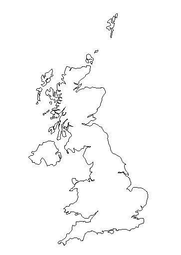

More information about recipe and where it comes from? Food from Great Britain, at home

Ingredients
1 tbsp olive oil
1 large onion, halved and sliced
2 large carrots
(500g/1lb 2oz in total), cut into sugar-cube size pieces
2 tbsp thyme, chopped
200ml red wine
400g can chopped tomato
2 vegetable stock cubes
410g can green lentils
950g sweet potato, peeled and cut into chunks
25g butter
85g vegetarian mature cheddar, grated
Method
Heat the oil in a frying pan, then fry the onion until golden. Add the carrots and all but a sprinkling of thyme. Pour in the wine, 150ml water and the tomatoes, then sprinkle in the stock cubes and simmer for 10 mins. Tip in the can of lentils, including their juice, then cover and simmer for another 10 mins until the carrots still have a bit of bite and the lentils are pulpy.
Meanwhile, boil the sweet potatoes for 15 mins until tender, drain well, then mash with the butter and season to taste. Pile the lentil mixture into a pie dish, spoon the mash on top, then sprinkle over the cheese and remaining thyme. The pie can now be covered and chilled for 2 days, or frozen for up to a month.
Heat oven to 190C/170C fan/gas 5. Cook for 20 mins if cooking straight away, or for 40 mins from chilled, until golden and hot all the way through. Serve with broccoli.